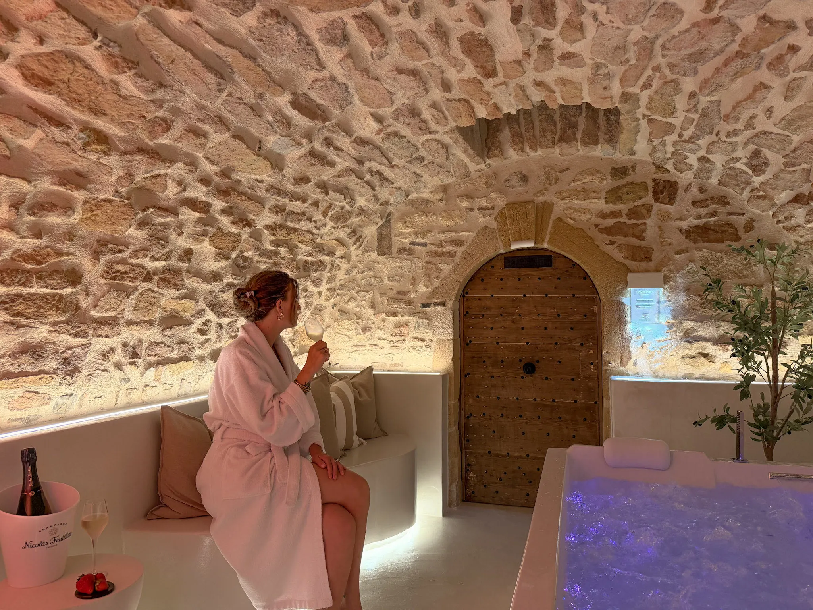
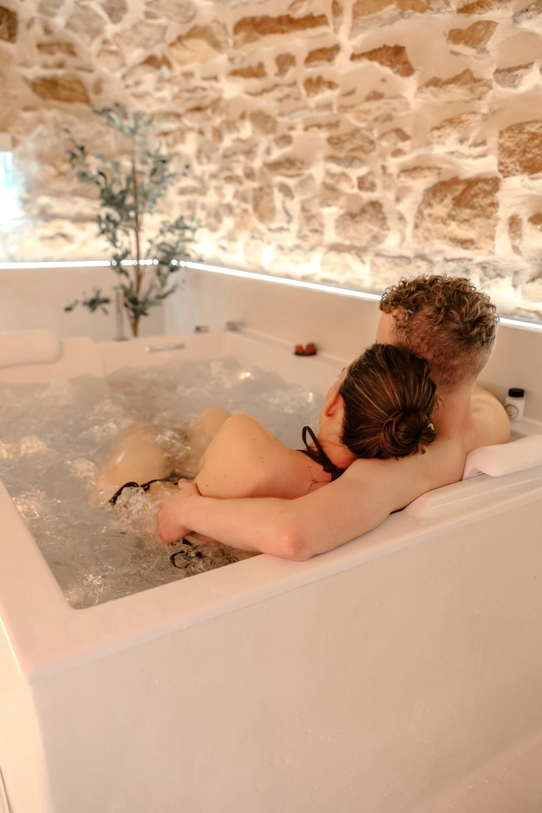

Lyon s'illumine,
vous, vous vous posez.
Quatre soirées, des millions de visiteurs, une ville qui ne dort plus. La Fête des Lumières est un spectacle à ne pas manquer — et une excellente raison de dormir ailleurs qu'en plein centre.

Chaque année début décembre, Lyon éteint ses lumières ordinaires pour en allumer d'extraordinaires. Façades transformées en toiles monumentales, quais et places scénographiés, foule des grands soirs : la Fête des Lumières est devenue l'un des événements les plus courus de France. Reste à savoir comment la vivre sans y laisser sa soirée dans les transports ou son budget dans un hôtel de dernière minute.
Les dates à retenir : du 5 au 8 décembre 2026
L'édition 2026 se tient du samedi 5 au mardi 8 décembre, quatre soirées gratuites pendant lesquelles une vingtaine d'œuvres lumineuses, projections monumentales et installations investissent les places, quais et monuments de la ville. Le programme précis — artistes, parcours, emplacements — est généralement dévoilé par la Ville de Lyon début novembre : à surveiller sur le site officiel dans les semaines qui précèdent l'événement.
Un succès qui a un revers
Selon les éditions, la Fête des Lumières attire entre deux et quatre millions de visiteurs sur les quatre soirées. Mécaniquement, cela signifie un centre-ville saturé, des rues partiellement fermées à la circulation en soirée, et des hôtels du centre qui affichent complet ou presque dès que les dates sont connues. Ce n'est pas un détail à sous-estimer si vous comptiez improviser un hébergement sur place.
S'y rendre sans voiture
Circuler en voiture dans Lyon pendant l'événement est généralement une mauvaise idée : axes saturés, stationnement aléatoire, et périmètre piéton fermé en soirée autour des principales installations. La solution la plus simple reste le train : la gare de Lyon-Part-Dieu est directement reliée au centre et à ses lignes de métro et tramway.
Depuis Villefranche-sur-Saône, comptez environ 20 à 25 minutes en TER, avec plusieurs trains par heure aux horaires de pointe — de quoi rejoindre le cœur de l'événement en soirée et rentrer tranquillement, sans chercher de place de parking à minuit passé.
Loger à vingt minutes, profiter sans la cohue
Plutôt que de payer le prix fort pour une chambre exiguë en plein centre — quand il en reste —, poser ses valises à Villefranche-sur-Saône change la soirée : les mêmes lumières, sans la queue pour rentrer à l'hôtel ni le voisin de palier qui rentre à 3 heures du matin.
La Voûte des Sens propose une suite privative avec spa balnéo en plein centre de Villefranche-sur-Saône, à deux pas de la gare. De quoi finir la soirée par un bain à remous plutôt que par une recherche de taxi. Voir les disponibilités du 5 au 8 décembre.
Questions fréquentes
Quand a lieu la Fête des Lumières 2026 ?
La Fête des Lumières 2026 se déroule à Lyon du samedi 5 au mardi 8 décembre, quatre soirées gratuites. Le programme détaillé des œuvres et parcours est habituellement dévoilé par la Ville de Lyon début novembre.
Faut-il venir en voiture pour la Fête des Lumières ?
C'est fortement déconseillé : une partie du centre-ville de Lyon est fermée à la circulation en soirée pendant l'événement et le stationnement y est très difficile. Le train, via la gare de Lyon-Part-Dieu, est la solution la plus simple.
Où dormir pour la Fête des Lumières sans la cohue hôtelière ?
Villefranche-sur-Saône se trouve à environ 20 minutes en train de Lyon-Part-Dieu. La Voûte des Sens y propose une suite privative avec spa balnéo, loin de la saturation du centre-ville pendant ces quatre soirs.

La Voûte des Sens
Une voûte de pierre,
deux personnes.
Balnéo privative, douche sensorielle et pièce secrète, à Villefranche-sur-Saône, à 20 minutes de train de Lyon-Part-Dieu. 5,0/5 sur 20 commentaires.